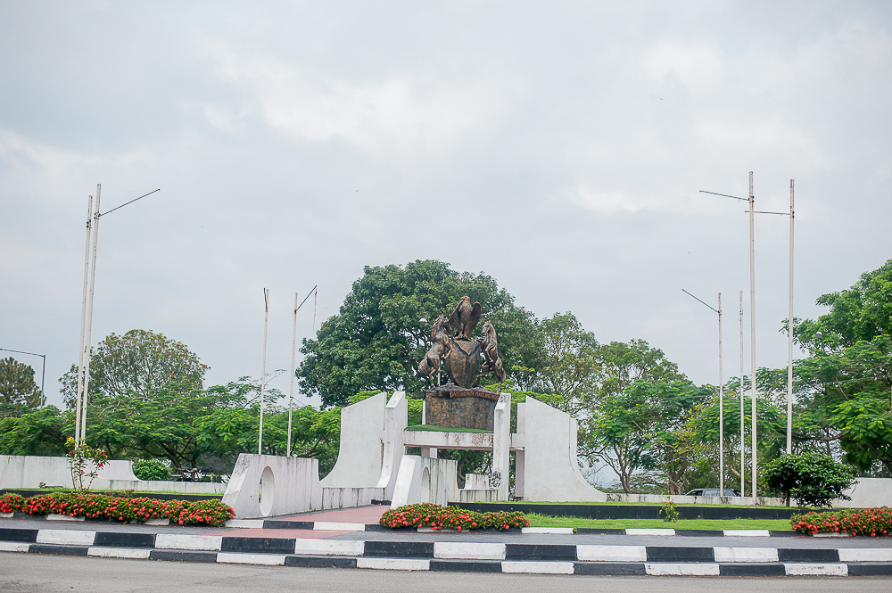

Cross River state in Nigeria

Cross River State is a coastal state in southeastern Nigeria, bordering Cameroon to the east. Its capital is atCalabar, and it is named for the Cross River (Oyono), which passes through the state. Ejagham and Efik are major languages of this state.
Cross River State is a coastal state in South Eastern Nigeria, named after the Cross River, which passes through the state. Located in the Niger Delta, Cross River State occupies 20,156 square kilometers. It shares boundaries with Benue State to the north,
Enugu and Abia States to the west, to the east by Cameroon Republic and to the south by Akwa-Ibom and the Atlantic Ocean.
South Eastern State was created on May 27, 1967 from the former Eastern Region, Nigeria by the General Yakubu Gowon regime. Its name was changed to Cross River State in the 1976 state creation exercise by the then General Murtala Mohammed regime from South Eastern State.
The present day Akwa Ibom State was excised from it in the state creation exercise of September 1987 by the
then regime of General Ibrahim Babangida. Its capital is Calabar. Its major towns are Akamkpa, Biase, Calabar South, Ikom, Obubra, Odukpani, Ogoja, Ugep, Obudu, Obanliku andAkpabuyo.
The state has been previously governed by many governors and administrators including Udoakaha J. Esuene, Paul Omu, Tunde Elegbede, Clement Isong, Donald Etiebet, Daniel Archibong, Ibim Princewill, Ernest Atta, Clement Ebri, Ibrahim Kefas,
Gregory Agboneni, Umar Faoruk Ahmed, Christopher Osondu, Donald Duke, Liyel Imoke and Benedit Ayade. The current governor is Sentator Prine Otu.